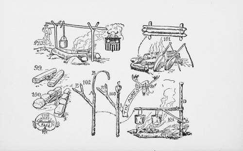

The Aures
Description
This section is from the book "The Book Of Camp-Lore And Woodcraft", by Dan Beard. Also available from Amazon: The Book of Camp-Lore and Woodcraft.
The Aures
Is a rustic crane made exactly of the same form as are the cranes of the old-fashioned open fire-places, but ingeniously fashioned from a carefully selected green stick with two forks (Fig. 102). The long end of the main branch is severed at A (Fig. 102),care being taken not to cut through the green bark, B (Fig. 102). The bark of the latter, B, is then bent over the stub, A (Fig. 102), forming a loop, C (Fig. 103), which is lashed with green bark to the main stick and slipped over the upright, D (Fig. 104). The fork at E braces the crane and holds it in a horizontal position, resting on a stub left on D for that purpose. How practicable this thing may be depends altogether upon the time and skill one has at one's disposal. One would hardly use the Aures for a single night camp, but if one were to spend a week in the same camp, it would be well worth while and at the same time very interesting work to manufacture a neat Aures crane for the camp kitchen. The next step in camp kitchen fires will include what might be termed the pit fires, which will be described in the following chapter.
You have been told how to select the firewood, make the kindling and start a fire in the preceding chapter on how to build a fire; all you have to remember now is that in certain particulars all fires are alike; they all must have air to breathe and food to eat or they will not live.
In the case of the fire we do not call the air breath, but we give it a free circulation and call it a draught. Wood is the food that the fire eats and it must be digestible, a fire with indigestion is a fire fed with punky, damp wood carelessly thrown together in place of well-selected dry split wood which the fire can consume cleanly, digest evenly, and at the same time give out the greatest amount of heat.
To produce a draught the fire must, of course, be raised from the ground, but do not build it in a careless manner like a pile of jack-straws. Such a fire may start all right, but when the supporting sticks have burned away it will fall in a heap and precipitate the cooking utensils into the flames, upsetting the coffee or teapot, and dumping the bacon "from the frying pan into the fire."
Be it man, woman, boy or girl, if he, she or it expects to be a camper, he, or she or it must learn to be orderly and tidy around camp. No matter how soiled one's clothes may be, no matter how grimy one's face may look, the ground around the camp-fire must be clean, and the cooking utensils and fire wood, pot-hooks and waugan-sticks, all orderly and as carefully arranged as if the military officer was expected the next minute to make an inspection.
All my readers must remember that By
Their Camp-Fire
They Will be Known and "sized up" as the real thing or as chumps, duffers, tenderfeet and cheechakos, by the first Sourdough or old-timer who cuts their trails.
Continue to: